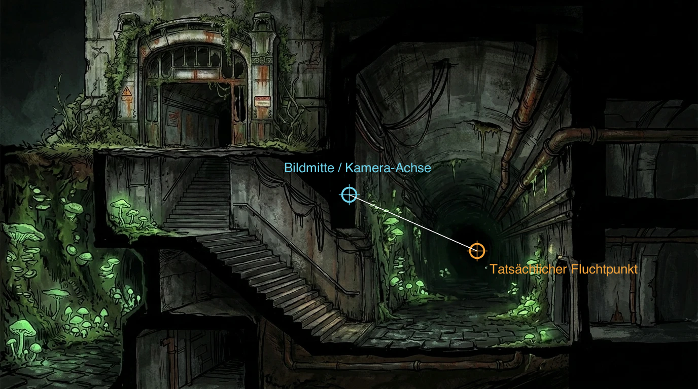

The Whisper — Referenz & Grundlagen
Wie 2.5D funktioniert
Kein Sonderfall, sondern eine sehr alte, sehr bewährte Familie von Tricks. Die Frage ist nie "2D oder 3D?", sondern: an welcher Stelle wird geschummelt — und was bricht, wenn man's übertreibt.
01Was 2.5D eigentlich ist
Reines 2D: alles sind flache Sprites, die Kamera ist irrelevant, es gibt keine Tiefe. Reines 3D: alles ist echte Geometrie, die Kamera kann (fast) überallhin. 2.5D sitzt dazwischen — echte 3D-Objekte (meistens die Spielfigur), aber die Welt drumherum, die Kamera oder beides sind bewusst eingeschränkt, damit es wie eine flache, komponierte Bildwelt aussieht statt wie ein freier 3D-Raum.
Euer eigenes Story-Dokument nennt das schon beim Namen, ohne es "2.5D" zu nennen — das "Wiener Guckkasten-Prinzip": Außenwelt in Iso-Draufsicht, Innenräume als seitlich aufgeschnittene Theaterkulisse. Das ist exakt diese Familie von Tricks, nur mit einem Wiener Namen dafür.
02Der eigentliche Trick: wie Tiefe vorgetäuscht wird
Drei grundverschiedene Wege, die alle "Tiefe" behaupten, ohne dass sich wirklich viel im 3D-Raum bewegt. Klick durch:
Mehrere flache Bildschichten liegen hintereinander. Bewegt sich die Kamera seitwärts, scrollen nähere Schichten schneller als fernere — das Auge liest daraus Tiefe, obwohl jede Schicht für sich komplett flach ist.
Beispiele: klassische 2D-Jump'n'Runs (Super Mario World), moderne Indie-Plattformer.
- Günstigste Variante, kaum Rechenlast
- Sehr gut vorhersehbar, keine Kamera-Überraschungen
- Figur kann sich nicht wirklich "hineinbewegen"
- Nur seitliche Bewegung möglich, keine echte Tiefe
Genau euer Flakturm-Tunnel: BACKGROUND_Z ist konstant, die Kamera wird nie bewegt. Das Hintergrundbild trägt die ganze Kulisse; die Engine muss nur eine einzige echte 3D-Sache berechnen — die Figur.
Beispiele: Grim Fandango, Broken Sword, die frühen Resident-Evil-Teile.
- Hintergrund kann so aufwendig/gemalt sein wie man will — kostet zur Laufzeit nichts
- Sehr kontrolliertes, kinoartiges Bildkader
- Kamera kann geometrischen Rand-Fällen (z.B. Selbstverdeckung) nie ausweichen
- Perspektive von Kunst und 3D-Kamera muss exakt zusammenpassen
Genau eure StageZone-Punkte: jeder Zonen-Punkt trägt einen eigenen scale-Wert (1.0 unten an der Treppe, 0.5 oben, 0.3 tief im Tunnel). Zwischen den Punkten wird linear interpoliert — "näher/weiter" ist reine Verkleinerung, keine echte Tiefenbewegung.
Klassisches Adventure-Spiel-Mittel, auch schon in 90er-Jahre-Point-and-Click-Spielen.
- Ein einziger Zahlenwert pro Zonen-Punkt, leicht von Hand zu tunen
- Funktioniert auch dort, wo die Kamera nie hinschaut
- Braucht sorgfältig gesetzte Werte — zu große Sprünge wirken abrupt, zu kleine kaum spürbar
- Bleibt eine Illusion: keine echte Tiefen-Bewegung im Raum
OrbitController). Beide Ansätze leben nebeneinander im selben Projekt, für unterschiedliche Zwecke: Schaufenster-Präsentation vs. steuerbare Spielszene.
03Ein Hintergrundbild anlegen: Perspektive & Fluchtpunkt
Bevor überhaupt eine Zone gezeichnet wird, muss das Bild selbst zur 3D-Kamera passen. Das ist der Schritt, der am leichtesten übersehen wird.
Reihenfolge, die funktioniert
- Erst die Kamera festlegen — Position, Blickrichtung, Sichtfeld (FOV). Bei eurem Flakturm-Tunnel:
camera.position.set(0, 4.5, 10.864), Ziel(0, 4.5, 0), Standard-FOV 75°. Die Kamera blickt exakt geradeaus, nicht seitlich geneigt. - Seitenverhältnis des Bildes danach richten, nicht umgekehrt.
BACKGROUND_WIDTH = 16,BACKGROUND_HEIGHT = 9— das Bild wird 1:1 auf eine Ebene in genau dieser Größe gemappt, kein Zuschneiden oder Strecken nötig, wenn das Seitenverhältnis von Anfang an stimmt. - Erst jetzt malen/generieren — mit dem Wissen, wo die Kamera sitzt und wie weit sie "hineinschaut". Wird zuerst gemalt und die Kamera danach passend geraten, muss man rückwärts rechnen — geht auch, ist aber unnötig fehleranfällig.
Wo der Fluchtpunkt hingehört
Bei einer geraden, symmetrischen Kamera wie eurer (Kamera-X = Ziel-X, Kamera-Y = Ziel-Y, nur Z unterschiedlich) gibt es genau einen Fluchtpunkt — und der muss exakt dort liegen, wo die optische Achse der Kamera die Bildebene durchstößt. Bei einem zentrierten Blick ist das schlicht die Bildmitte. Jede Linie im Bild, die "in die Tiefe" führt (eine Tunnelröhre, eine Zimmerflucht, Gleise), muss dorthin zulaufen — sonst kämpft die spätere 3D-Figur sichtbar gegen eine Perspektive, die nicht zu ihrer eigenen passt.

Wie man's selbst prüft: zwei, drei deutlich gerade Linien im Bild verlängern (eine Wandkante, eine Rohrleitung, den Rand eines Ganges) und schauen, wo sie sich wirklich treffen. Liegt dieser Punkt nicht dort, wo die Kamera-Achse laut Code hinzeigt, weiß man es wenigstens — und kann entscheiden, ob es bei diesem Bild etwas ausmacht oder nicht.
04Wie man sich bewegt — Bewegungsbereiche definieren
Die Grundfrage jedes 2.5D-Spiels: wo genau darf die Figur hin? Ein gemaltes Bild hat keine eingebaute Kollisionsgeometrie — die muss man von Hand dazulegen. Drei verbreitete Lösungen:
Walk-Mask (Bitmap)
Ein zweites, unsichtbares Bild in Schwarz/Weiß — weiß = begehbar. Sehr alt, sehr einfach, aber pixelgenau und mühsam zu pflegen.
Navmesh (3D)
Ein Gitter aus Dreiecken über echter 3D-Geometrie, meist automatisch aus der Level-Geometrie gebacken. Der Standard in echten 3D-Spielen.
Normierte Polygon-Zonen
Ein paar wenige (u,v)-Punkte direkt auf das Bild gezeichnet, im Editor per Maus verschiebbar. Leichtgewichtig, künstlerfreundlich, kein Bitmap nötig.
Bei euch: DEFAULT_ZONE_POINTS in flakturm-tunnel/showcase.ts, drei benannte Zonen (zone_a/zone_b/zone_c), jede ein Vieleck aus vier (u,v)-Punkten mit je einem scale-Wert. StageMovementBehavior._resolveMove() prüft bei jeder Bewegung, ob die neue Position noch innerhalb eines Polygons liegt, und klemmt sie sonst auf den nächsten gültigen Rand — das ist die ganze "Kollision". Der eingebaute Editor (Taste [E]) lässt euch diese Punkte direkt mit der Maus auf dem Bild verschieben, statt Koordinaten zu tippen.
So legt ihr eine Zone in der Praxis an
- Bodenlinie im Bild finden. Nicht die Wände oder die Decke — die Fläche, auf der Füße stehen würden. Bei eurem Tunnelbild: die Pflastersteine, nicht die Tunnelwölbung darüber.
- Editor öffnen (
[E]), vier Eckpunkte grob auf diese Fläche setzen. Am einfachsten am nächstgelegenen Rand anfangen (unten im Bild, wo die Figur startet) und sich nach hinten vorarbeiten. - Jeden Punkt einzeln an die gemalte Kante ziehen, nicht "ungefähr" platzieren — ein Punkt, der 2% zu weit über die gemalte Wand hinausragt, sieht man später sofort, weil die Figur optisch durch die Wand läuft.
scalepro Punkt setzen, passend zur gemalten Größe an dieser Stelle (vorne1.0, an einer erkennbar weiter entfernten Engstelle spürbar kleiner — testen, nicht schätzen).- Zwei Zonen an einer gemeinsamen Kante verbinden, indem die Punkte an der Nahtstelle möglichst exakt dieselben (u,v)-Werte bekommen — sonst gibt's beim Zonenwechsel einen sichtbaren Sprung in Position oder Größe.
- Wirklich durchlaufen und ansehen, nicht nur die Polygone im Editor betrachten — ob eine Zone "passt", sieht man erst mit der Figur darin, nicht am Umriss allein.
05Welche Kameras gibt es?
Eure Engine hat sieben fertige Kamera-Strategien — jede davon ist ein bekanntes Muster aus echten Spielen, nur mit eigenem Namen:
FIXED
Steht fest, blickt aber immer auf ein Ziel. Genau der Flakturm-Tunnel.
HYBRID_SYNC
Kugel-Orbit um ein Ziel, per Maus drehbar/zoombar. Euer Character Diorama.
STIFF
Folgt der Figur sofort, ohne jede Verzögerung — hart und direkt.
SMOOTH
Folgt der Figur, aber gedämpft/eingeschwungen — sanftes Nachziehen.
ISOMETRIC
Orthographisch, fester Winkel, kein Fluchtpunkt. Kein "näher = größer".
FPS
Sitzt direkt im Kopf der Figur, dreht sich mit ihrem Blick.
MANUAL
Die Engine tut gar nichts automatisch — volle Handarbeit, z.B. für Cutscenes.
06Selbst nachbauen: das Grundgerüst in Small World
Keine Zauberei — das ganze Flakturm-Tunnel-System besteht aus fünf Bausteinen, die alle schon in der Engine existieren. Skizze, keine Kopiervorlage:
// 1. Kamera fest positionieren, nie wieder anfassen this.camera.position.set(0, 4.5, 10.864); this.camera.target.set(0, 4.5, 0); // 2. Gemaltes Hintergrundbild als flache, unlit Ebene const bg = new Plane({ width: 16, height: 9 }); bg.material = new BasicMaterial({ diffuseMap: await new Texture().load("bg.webp") }); // 3. Begehbare Fläche als Vieleck in Bild-Koordinaten (u,v 0..1) const zoneA = new StageZone({ id: "zone_a", points: [ { u: 0.46, v: 0.90, scale: 1.0 }, { u: 0.83, v: 0.89, scale: 1.0 }, { u: 0.77, v: 0.82, scale: 1.0 }, { u: 0.51, v: 0.82, scale: 1.0 }, ], }); // 4. Bewegung: normierte Zonen + Tastatur, keine echte Kollisionswelt nötig const movement = new StageMovementBehavior({ input: this.input, speed: 0.09, zones: [zoneA], uvToWorld: (u, v) => ({ x: (u - 0.5) * 16, y: 4.5 + (0.5 - v) * 9, z: 0 }), }); playerRig.addBehavior(movement); // 5. Figur selbst braucht ein lichtempfindliches Material, der Hintergrund nicht character.material = new StandardMaterial({ diffuseMap: charTexture, roughness: 0.92 });
Das ist im Kern schon alles — der Rest (Animationen, Laterne, Bühnen-Editor) baut nur darauf auf. Wer diese fünf Zeilen-Gruppen versteht, versteht das komplette Bewegungssystem des Flakturm-Tunnels.
07Lektionen aus genau diesem Projekt
Keine Theorie — das, was in den letzten zwei Tagen tatsächlich schiefging, jetzt als Faustregel:
- FIXE KAMERAEine Kamera, die nie ausweicht, macht jeden geometrischen Rand-Fall (Selbstverdeckung, ein Ast genau vor dem Kopf) garantiert reproduzierbar statt selten — plant die Start-Ausrichtung der Figur bewusst, nicht zufällig.
- SKALIERUNG ALS TIEFEErzwungene Perspektive braucht genauso sorgfältige Werte wie echte Beleuchtung — ein zu aggressiver
scale-Sprung zwischen zwei Zonen-Punkten liest sich als Fehler, nicht als Tiefe. - GEMALT vs. GELICHTETEin gemaltes Hintergrundbild braucht kein 3D-Licht (
BasicMaterialist hier richtig) — die 3D-Figur davor aber schon (StandardMaterial). Beide auf "unlit" zu setzen, weil's einfacher aussieht, lässt die Figur unsichtbar flach wirken. - TEMPO ≠ ANIMATIONSTEMPOWie schnell sich die Figur über die Bühne bewegt und wie schnell ihre Animation abspielt, sind zwei komplett getrennte Zahlen — einen Geh-Speed-Fix behebt nie einen zu kurzen Animations-Clip.
08Zum Weiterschauen
Spiele, an denen sich die drei Tiefen-Tricks von oben gut nachvollziehen lassen:
vorgerendert + 3D-Figur
vorgerendert + 3D-Figur
echtes 3D, Kamera stark eingeschränkt
isometrisch, gemalter Look
Seiten-2.5D, echte Tiefe nutzbar
Parallax-Ebenen